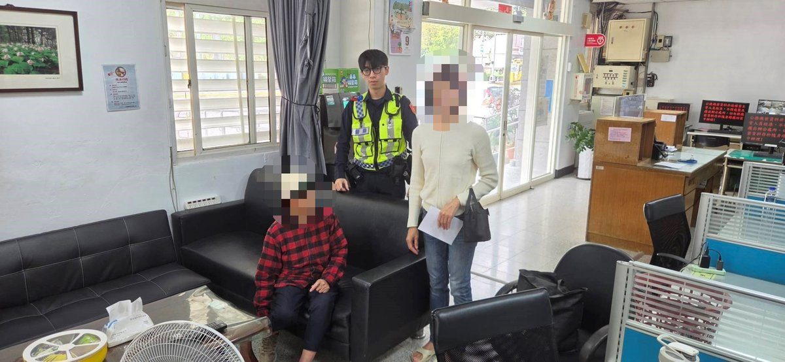

失智婦迷途欲徒步返玉里 新城警民接力助返家

可樂電子報小編/編輯
日前有一名婦人獨自站在花蓮縣秀林鄉富世村的路旁徘徊，口中不斷說著要徒步返回玉里住家，腳步卻一路往太魯閣方向前進，方向完全相反。路過民眾察覺她疑似失智迷途，擔心再走下去恐怕發生危險，趕緊向警方報案求援。新城警分局富世派出所警員盧立軒接獲通報後，隨即趕赴現場瞭解婦人狀況。
員警到場後查知，這名林姓婦人是趁家人外出工作時獨自離家，因為患有失智症而迷失方向，從離家後一路走了許久，直到翌日上午才被熱心民眾看見。附近檳榔攤業者見婦人疑似許久未進食，主動提供飲用水及茶葉蛋供其充飢，讓她先補充體力，也為這場警民合作的尋人接力添上一段溫暖插曲。

經員警耐心詢問，婦人表示自己只想返回玉里住家，盧員便先將她帶返派出所休息，並著手查證身分。經比對後，確認她是前一日通報協尋的失蹤人口，警方立即通知家屬前來接回。婦人女兒趕抵派出所後，終於見到平安無事的母親，順利將人接回，並對警方及熱心民眾的協助表達由衷感謝。
新城警分局表示，失智長者走失往往只在一瞬之間，家屬平日除了多加留意其動向，也可協助配戴具有緊急聯絡資訊的識別配件，例如手鍊、項鍊或隨身卡片，甚至在衣物上繡註聯絡方式，讓走失時能迅速聯繫家人、縮短協尋時間，多一分事前準備，就多一分平安返家的機會，也讓協尋工作更有效率。
新城警分局也提醒民眾，若在街頭發現疑似迷途或需要協助的長者，可主動上前關懷並通報警方，由員警到場協助查證身分、聯繫家屬。警方強調，及早通報才能把握黃金協尋時間，警民合作更是守護失智長者最有效的方式，只要多一分留意，就能讓迷途長者平安回到家人身邊。
🌟 掌握花蓮在地第一手資訊・歡迎訂閱追蹤
深度紀實報導、在地精采影音專題，第一時間接收最新消息！